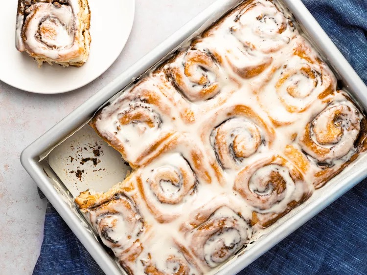

Cinnamon Rolls

Breathe the calories!
Nothing kicks off a holiday celebration quite like waking up to the smell of cinnamon rolls wafting from the oven, especially when I don't have to lift a finger that morning except to preheat the oven. That's the magic of this recipe for overnight cinnamon rolls, which ensures all the heavy lifting is knocked out a day (or even weeks) in advance. Even better, it's a one-bowl recipe, so I don't need to dirty every dish in the house just to make a special breakfast. It's one of the most versatile recipes in my cookbook, with variations on the dough, filling, and frosting that include combinations like apple cinnamon, banana, brown butter sweet potato, double chocolate, pumpkin spice rolls, and even Little Debbie–style Honey Buns. But if I could share only one recipe, it would be this one: all-American cinnamon rolls with toasted pecans and cream cheese frosting. The bun itself is tender, soft, and light, with a bit of complexity of its own thanks to an overnight rise in the fridge. It's dotted with crunchy bits of toasted pecans, perfumed by the buttery cinnamon filling, and brightened by the tang of gooey cream cheese frosting. It's a festive breakfast that sets the perfect tone for the day, with all the individual components combining into something that's more than the sum of its many parts.
Ingredients:
Frosting:
- 4 ounces plain, full-fat cream cheese (8 tablespoons; 115g), softened to about 70°F (21°C)
- 2 teaspoons (10ml) vanilla extract
- 5 ounces powdered sugar (about 1 1/4 cups; 141g)
Filling:
- 4 ounces unsalted butter (8 tablespoons; 115g), creamy and soft, about 70°F (21°C)
- 6 ounces light brown sugar (3/4 cup, gently packed; 170g)
- 1/2 ounce ground cinnamon (about 2 tablespoons; 15g)
- 1/2 teaspoon (1g) grated nutmeg
- 1/4 teaspoon (1g) Diamond Crystal kosher salt; for table salt, use about half as much by volume or the same weight
- 4 ounces toasted pecan halves, roughly chopped (a shy cup; 115g), or more to taste
Dough:
- 16 ounces all-purpose flour (about 3 1/2 cups, spooned; 450g), such as Gold Medal, plus more for rolling
- 3 1/2 ounces granulated sugar (about 1/2 cup; 100g)
- 2 teaspoons (8g) instant yeast, such as SAF (not rapid-rise; see notes)
- 1 3/4 teaspoons (7g) Diamond Crystal kosher salt; for table salt, use about half as much by volume or the same weight
- 1/4 teaspoon (1g) baking soda
- 4 ounces unsalted butter (8 tablespoons; 115g)
- 4 ounces milk (8 tablespoons; 115g), any percentage will do
- 8 ounces plain, unsweetened Greek yogurt (about 1 cup; 225g), any percentage will do
Steps:
- For the Frosting: Combine cream cheese and vanilla with half the powdered sugar in the bowl of a stand mixer fitted with a paddle attachment. Mix on low to moisten, then sprinkle in the rest of the sugar a little at a time. Once it is incorporated, increase to medium and beat until creamy and pale ivory, about 5 minutes. Transfer to a zip-top bag or disposable pastry bag and set aside until needed, up to 24 hours at room temperature. (If your kitchen is chilly and the frosting hardens in that time, briefly microwave the bag to restore its creamy texture before use.)
- For the Filling: Prepare filling with the same bowl and beater, mixing butter, brown sugar, cinnamon, nutmeg, and salt on low speed until moistened. Increase to medium and beat the dark paste until creamy, light in color, and very soft, about 5 minutes. Transfer to a zip-top bag or disposable pastry bag and set aside until needed, up to 24 hours at room temperature. Reserve the pecans until it's time to fill and shape the rolls.
- For the Dough: Wipe the bowl with a paper towel, then whisk together flour, sugar, yeast, salt, and baking soda until thoroughly combined. Melt butter in a 2-quart saucier over low heat, then stir in milk and yogurt, warming to about 80°F (27°C). Add to flour and stir to form a very dry and shaggy dough. With the hook attachment, knead on low until silky-smooth and elastic, able to be gently stretched into a thin but rough sheet without tearing, about 20 minutes.
- First Rise: Cover bowl with plastic and set dough to rise until puffy, light, and doubled in bulk, about 90 minutes at roughly 70°F (21°C). If the dough feels dense, firm, or overly resilient, rest 15 minutes before testing again (this is more likely in chilly months).
- Shaping: Turn dough onto a lightly floured surface, dust with flour, and roll into a 13-inch square. Snip a corner from the bag of cinnamon filling, squeeze over the dough, and spread into an even layer with an offset spatula. Sprinkle pecans on top and roll to form a 12-inch log, ending seam side down.
- Slide an 8-inch strand of thread, unflavored dental floss, or butcher's twine under the dough until you reach the middle. Cross the ends over the top and pull tight to divide the log in two. Cut each half into six 1-inch slices and arrange in a parchment-lined 9- by 13- by 2-inch aluminum baking pan (or two 8-inch by 3-inch round cake pans).
- Second Rise: Cover rolls with foil and refrigerate overnight, or up to 48 hours. Adjust oven rack to middle position and preheat to 350°F (180°C); meanwhile, let cinnamon rolls stand at room temperature until oven is hot.
- To Bake and Serve: Bake, covered, until cinnamon rolls are puffed and firm but pale, about 45 minutes. (If using darker pans, check on the cinnamon rolls after 30 minutes.) Remove the foil and continue baking until lightly browned, about 15 minutes more. Snip a corner from the bag of frosting, squeeze over the cinnamon rolls, and spread into an even layer with the back of a spoon. Serve immediately, and leave no survivors; life’s too short for day-old cinnamon rolls.